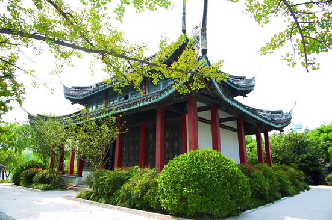

嘉兴市文物保护网 · 市级文物保护单位 · 2014-06-17 · 原文

仓圣祠位于嘉兴市南湖区南湖街道南湖社区南湖小瀛洲岛，俗称小烟雨楼。原由嘉兴地区民间组织“惜字会”为纪念传统的文字创始人仓颉，于清光绪年间建，民国十三年（1924）由嘉兴名流金蓉镜倡募重修，解放后又按原貌重修。该祠具有江南传统特色，系砖木结构，坐北朝南，占地面积90余平方米。面阔三开间，进深二开间，通面阔12.90米，通进深8.70米。梁架为抬梁式结构，内四界带前后单步，梁用瓜柱，不施斗拱，柱础形似覆盆，刻有缠枝花纹。重檐歇山顶，屋面甏瓦，屋脊为鱼带式，光明照飞檐发戗，发呈龙头状。整个祠装饰华丽、宏伟而又古朴，曾得苏州园林行家称誉好评。四周有回廊、台阶，前临放生池，四面环水，南眺南湖烟雨楼，垂柳环绕，花石林立，北以假山作屏障，回迂曲折，由圆洞厅，九曲桥沟通湖滨，祠在草木花石湖水怀抱之中，更显得壮观、精致。仓圣祠造型别致，环境优美，是嘉兴悠久历史的见证，具有较高的艺术和历史价值。1981年公布为嘉兴市级文物保护单位。